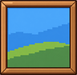
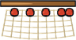
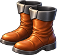
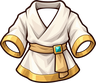
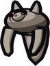
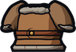
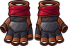
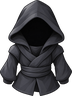
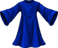

Tailoring
Tan hides into leather at a Tanning Rack and weave wool into cloth at a Loom, then make leather and cloth gear.
Level guide
| Level | Unlock | |
|---|---|---|
| 1 | Cloth: 2 Wool at a Loom | |
| 1 | Leather: 1 Hide at a Tanning Rack | |
| 3 | Leather Cap: 2 Leather at a Loom | |
| 5 |  | Canvas: 3 Cloth at a Loom |
| 6 |  | Fishing Net: 4 Wool at a Loom |
| 6 |  | Leather Boots: 2 Leather at a Loom |
| 8 | Fur Boots: 1 Hide, 2 Leather at a Loom | |
| 8 |  | White Robe: 4 Cloth at a Loom |
| 8 |  | Wolfskin Hood: 2 Hide, 1 Leather at a Loom |
| 10 | Leather Armor: 4 Leather at a Loom | |
| 15 | Tuxedo: 4 Cloth at a Loom | |
| 15 |  | Wolfskin Coat: 4 Hide, 2 Leather at a Loom |
| 25 |  | Ninja Gloves: 2 Leather, 1 Cloth at a Loom |
| 35 | Wizard's Robe: 5 Cloth, 1 Blue Crystals at a Loom | |
| 40 |  | Ninja Outfit: 4 Cloth, 2 Leather at a Loom |
| 55 |  | Necromancer's Robe: 6 Cloth, 1 Purple Crystals at a Loom |
Recipes
| Level | Makes | Needs | Where |
|---|---|---|---|
| 1 | Leather ×1 | 1 × Hide | Tanning Rack |
| 1 | Cloth ×1 | 2 × Wool | Loom |
| 3 | Leather Cap ×1 | 2 × Leather | Loom |
| 5 | Canvas ×1 | 3 × Cloth | Loom |
| 6 | Fishing Net ×1 | 4 × Wool | Loom |
| 6 | Leather Boots ×1 | 2 × Leather | Loom |
| 8 | White Robe ×1 | 4 × Cloth | Loom |
| 8 | Wolfskin Hood ×1 | 2 × Hide, 1 × Leather | Loom |
| 8 | Fur Boots ×1 | 1 × Hide, 2 × Leather | Loom |
| 10 | 4 × Leather | Loom | |
| 15 | Wolfskin Coat ×1 | 4 × Hide, 2 × Leather | Loom |
| 15 | Tuxedo ×1 | 4 × Cloth | Loom |
| 25 | Ninja Gloves ×1 | 2 × Leather, 1 × Cloth | Loom |
| 35 | Wizard's Robe ×1 | 5 × Cloth, 1 × | Loom |
| 40 | Ninja Outfit ×1 | 4 × Cloth, 2 × Leather | Loom |
| 55 | Necromancer's Robe ×1 | 6 × Cloth, 1 × Purple Crystals | Loom |